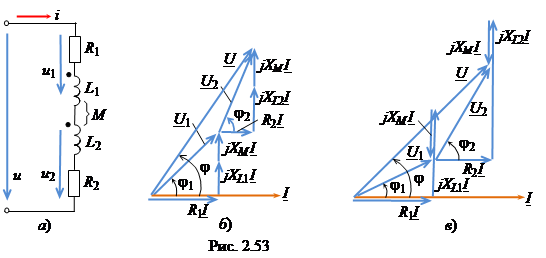

Пусть к зажимам цепи (рис. 2.53а) с параметрами R1, R2, L1, L2, M приложено напряжение u = Umsin(ωt + Ψu). Определим ток I в цепи и построим векторную диаграмму напряжений.
С о г л а с н о е в к л ю ч е н и е к а т у ш е к. В соответствии со вторым законом Кирхгофа имеем
или в комплексной форме
где и
− эквивалентные полное и индуктивное сопротивления двух индуктивно связанных катушек; − комплекс тока при согласном включении катушек.

Эквивалентная индуктивность катушек при их согласном включении
(2.96)
В с т р е ч н о е в к л ю ч е н и е к а т у ш е к. Запишем 2ЗК в комплексной форме (см. рис. 2.53а)

Заметим, что значение тока I при встречном включении катушек больше
значения тока при их согласном включении, т. к.
При встречном включении эквивалентная индуктивность катушек
(2.97)
Векторные диаграммы напряжений при согласном и встречном включении катушек представлены на рис. 2.53б, в, из которых следует, что при встречном их включении магнитные потоки
взаимоиндукции уменьшают напряжения на индуктивных элементах, а потому должны
увеличиться напряжения на активных элементах R1 и R 2 катушек вследствие возрастания тока I.